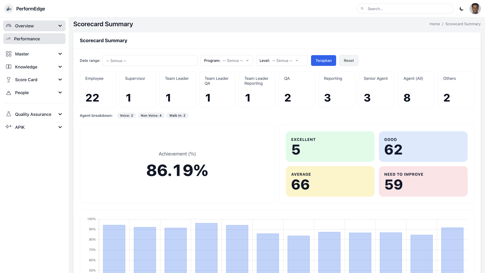

System Project
PerformEdge - Performance Assessment & KMS System
A web-based performance assessment and knowledge management system featuring role-based scorecards, performance reporting, and centralized service knowledge.